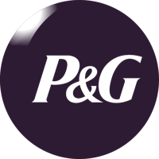
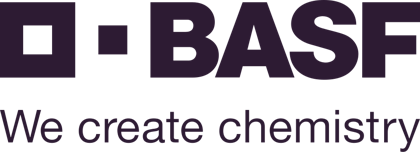
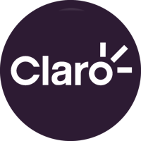

O digital traz o cliente.
A marca faz ele voltar.
Marketing digital com profundidade estratégica de marca. Cada post, campanha e mensagem já nasce com direção.

Como fazer o digital trabalhar de verdade pelo negócio?
Posta sem parar e não vira cliente.
Post guiado por uma estratégia de mensagem.
Anúncio vende uma vez e o cliente não volta.
Marca que faz o cliente voltar.
Disputa por preço, sem preferência.
Preferência pela marca, acima do preço.
Base de clientes parada.
Relacionamento que vira novo negócio.
Quatro frentes, um único fio condutor.
As cinco camadas soletram o nosso nome.
Crença
A verdade fundadora, o que a marca acredita e o mercado precisa ouvir.
Inflexão
A tensão onde a marca entra.
Resultado
A promessa que a marca entrega.
Código
Tom e personalidade: como a marca fala e se comporta.
Evidências
As histórias que provam tudo isso.
2×
Marca gera retorno mensurável.
Marcas que as pessoas percebem como diferentes conseguem cobrar até o dobro do preço médio da categoria e alcançam até 5× mais penetração de mercado.
Fonte: Kantar, Blueprint for Brand Growth.
Nossa trajetória


Remessa OnlineUnicoConsórcio Kawasaki
Cases
BASF Agro
Da 4ª para a 1ª posição no digital do agro, em 6 meses.
Posição em relevância digital do setor
O desafio
A pandemia derrubou as feiras, principal vitrine da marca.
O que fizemos
Proximidade virou o critério de cada projeto, conteúdo e canal.
300% ao ano em SEO, de 2021 a 2024. 16 prêmios do agro.
Remessa Online
Quando a confiança segura o cliente.
Churn, a taxa de clientes que vão embora
O desafio
Na atualização anual de cadastro, a maior parte das empresas clientes ia embora.
O que fizemos
Educação sobre a marca, o tamanho da empresa e a regulação do câmbio.
Printi
Quando a marca encontra sua direção.
Brand awareness, o quanto as pessoas conhecem a marca
O desafio
Crescimento acelerado, portfólio em expansão e novos canais na agenda.
O que fizemos
Estratégia de marca como base de cada decisão de comunicação.
Unico
Tornar conhecida uma marca que vende confiança.
Mídia na TV paga
O desafio
Marca pouco conhecida entre os grandes tomadores de decisão.
O que fizemos
Primeira campanha 360, com todas as áreas contando a mesma história.
10,6× mais visitas no dia de pico. 4,5 milhões de visualizações no YouTube.
Consórcio Kawasaki
Contatos mais baratos e melhores, em 3 meses.
Custo por contato
O desafio
Cada contato custava caro e chegava com pouca chance de virar venda.
O que fizemos
Mídia reorganizada em torno da qualidade do contato.
A qualidade acompanhou, com recorde de vendas.
Conteúdo
Por que duas empresas com o mesmo custo cobram preços tão diferentes
Aluguel, folha e margem explicam uma parte do preço. A outra parte é o que a sua marca conquistou, e dá para acompanhar mês a mês.
Vamos conversar?
Parceria e indicação são sempre bem-vindas. Se fez sentido, chama a Casa Circe.